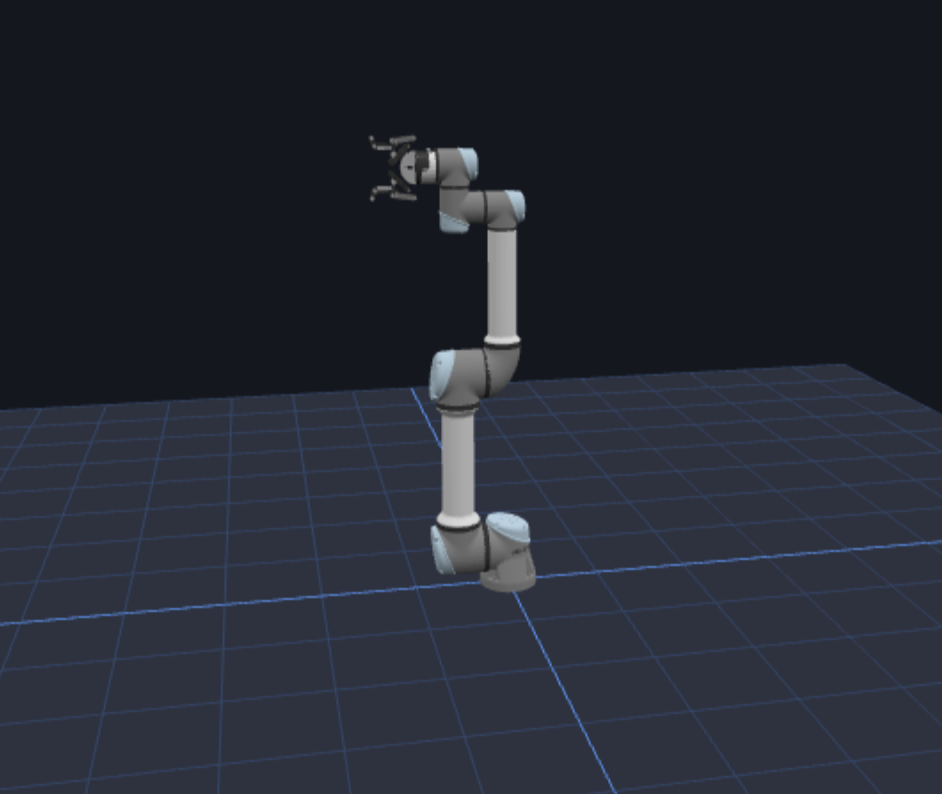

EduRobotics es la plataforma de educación en robótica de CIRTA: un simulador 3D que corre directamente en el navegador, sin instalar software ni comprar hardware, para que estudiantes y educadores aprendan a programar robots desde cero.

¿Qué es EduRobotics?
Es una plataforma de e-learning 100% en línea pensada para bajar las barreras de entrada a la robótica. En lugar de depender de un brazo robótico físico —caro, frágil y limitado a quienes pueden comprarlo—, EduRobotics ofrece un entorno de simulación 3D dentro del navegador donde cualquier persona puede escribir código, ver un robot moverse en tiempo real y equivocarse tantas veces como quiera sin costo ni riesgo.
Todo el ciclo de aprendizaje ocurre en el mismo lugar: la persona escribe o arma su programa, lo ejecuta sobre el modelo 3D del robot y observa de inmediato si la tarea se cumplió o qué falló. Ese ciclo corto de prueba y error es clave para aprender robótica y programación sin la fricción ni el costo de un laboratorio físico.
¿Cómo funciona?
Simulador 3D en el navegador
No requiere instalación: se abre en cualquier computador con navegador y conexión a internet.
Bloques y código
Los cursos se aprenden programando por bloques para quienes recién parten, o directamente con código para quienes ya avanzan.
Robótica colaborativa (UR5)
El simulador está modelado sobre un brazo robótico colaborativo tipo UR5, el mismo tipo de robot que se usa en la industria.
Cursos interactivos gratuitos
Rutas de aprendizaje guiadas, pensadas para llevar a la persona de cero conocimientos a programar tareas reales de un robot.
¿Para quién es?
Para estudiantes de colegios y universidades, educadores que quieren llevar robótica a la sala de clases sin presupuesto para equipos, y cualquier persona curiosa que quiera aprender a programar robots desde cero. Al ser gratuita y sin instalación, permite escalar el acceso a educación STEM en robótica a mucha más gente de la que un laboratorio físico podría atender.
También es una herramienta útil para docentes que ya trabajan con robótica y necesitan un entorno confiable para practicar antes de llevar una actividad al aula, o para complementar clases presenciales con ejercicios que los estudiantes pueden repetir desde su casa.
¿Qué se aprende en la ruta de cursos?
Los cursos parten desde los conceptos más básicos —qué es un robot colaborativo, cómo se mueve en el espacio, qué son sus articulaciones y su efector final— y avanzan hacia tareas más complejas como tomar y dejar objetos, seguir trayectorias definidas y encadenar instrucciones para resolver un problema completo. Cada curso combina teoría breve con ejercicios prácticos directamente sobre el simulador, de modo que el aprendizaje siempre se valida haciendo, no solo leyendo.
¿Por qué lo hace CIRTA?
EduRobotics es parte del objetivo de CIRTA de reducir brechas educativas en ciencia y tecnología: el simulador funciona como puerta de entrada de bajo costo para formar talento en robótica, y como base sobre la cual —en etapas futuras— es posible integrar hardware real para quienes quieran seguir avanzando.
Creemos que el acceso a la robótica no debería depender de cuánto presupuesto tiene un colegio o una universidad para comprar equipos. Por eso EduRobotics es y seguirá siendo gratuito para estudiantes y educadores: la barrera de entrada a aprender robótica debe ser cero.
Puedes explorar la plataforma completa en edurobotics.cl.